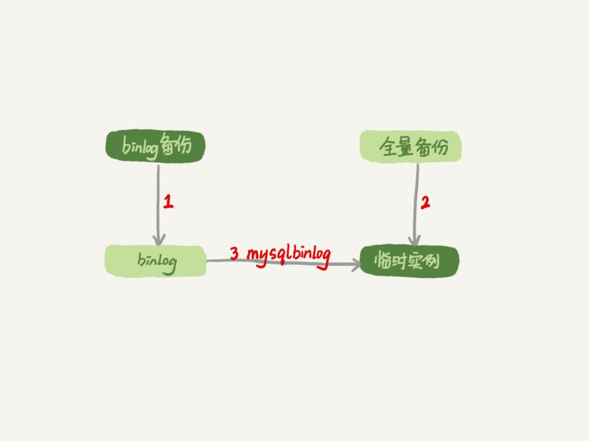
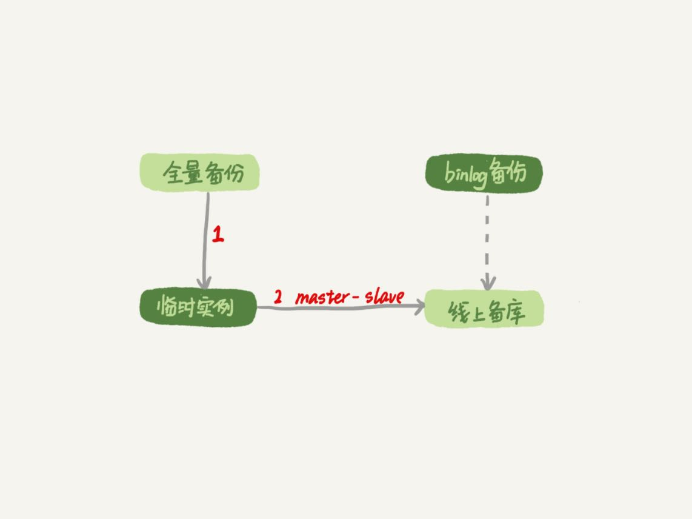
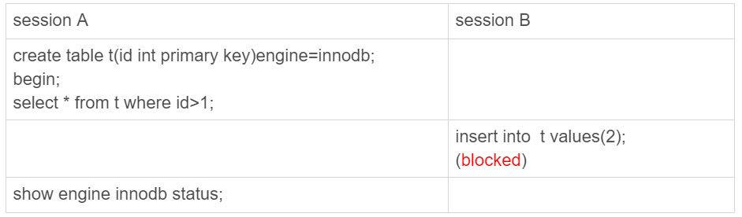
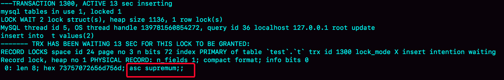

今天我要和你讨论的是一个沉重的话题：误删数据。
在前面几篇文章中，我们介绍了MySQL的高可用架构。当然，传统的高可用架构是不能预防误删数据的，因为主库的一个drop table命令，会通过binlog传给所有从库和级联从库，进而导致整个集群的实例都会执行这个命令。
虽然我们之前遇到的大多数的数据被删，都是运维同学或者DBA背锅的。但实际上，只要有数据操作权限的同学，都有可能踩到误删数据这条线。
今天我们就来聊聊误删数据前后，我们可以做些什么，减少误删数据的风险，和由误删数据带来的损失。
为了找到解决误删数据的更高效的方法，我们需要先对和MySQL相关的误删数据，做下分类：
使用delete语句误删数据行；
使用drop table或者truncate table语句误删数据表；
使用drop database语句误删数据库；
使用rm命令误删整个MySQL实例。
误删行
在第24篇文章中，我们提到如果是使用delete语句误删了数据行，可以用Flashback工具通过闪回把数据恢复回来。
Flashback恢复数据的原理，是修改binlog的内容，拿回原库重放。而能够使用这个方案的前提是，需要确保binlog_format=row 和 binlog_row_image=FULL。
具体恢复数据时，对单个事务做如下处理：
对于insert语句，对应的binlog event类型是Write_rows event，把它改成Delete_rows event即可；
同理，对于delete语句，也是将Delete_rows event改为Write_rows event；
而如果是Update_rows的话，binlog里面记录了数据行修改前和修改后的值，对调这两行的位置即可。
如果误操作不是一个，而是多个，会怎么样呢？比如下面三个事务：
(A)delete ...
(B)insert ...
(C)update ...
现在要把数据库恢复回这三个事务操作之前的状态，用Flashback工具解析binlog后，写回主库的命令是：
(reverse C)update ...
(reverse B)delete ...
(reverse A)insert ...
也就是说，如果误删数据涉及到了多个事务的话，需要将事务的顺序调过来再执行。
需要说明的是，我不建议你直接在主库上执行这些操作。
恢复数据比较安全的做法，是恢复出一个备份，或者找一个从库作为临时库，在这个临时库上执行这些操作，然后再将确认过的临时库的数据，恢复回主库。
为什么要这么做呢？
这是因为，一个在执行线上逻辑的主库，数据状态的变更往往是有关联的。可能由于发现数据问题的时间晚了一点儿，就导致已经在之前误操作的基础上，业务代码逻辑又继续修改了其他数据。所以，如果这时候单独恢复这几行数据，而又未经确认的话，就可能会出现对数据的二次破坏。
当然，我们不止要说误删数据的事后处理办法，更重要是要做到事前预防。我有以下两个建议：
把sql_safe_updates参数设置为on。这样一来，如果我们忘记在delete或者update语句中写where条件，或者where条件里面没有包含索引字段的话，这条语句的执行就会报错。
代码上线前，必须经过SQL审计。
你可能会说，设置了sql_safe_updates=on，如果我真的要把一个小表的数据全部删掉，应该怎么办呢？
如果你确定这个删除操作没问题的话，可以在delete语句中加上where条件，比如where id>=0。
但是，delete全表是很慢的，需要生成回滚日志、写redo、写binlog。所以，从性能角度考虑，你应该优先考虑使用truncate table或者drop table命令。
使用delete命令删除的数据，你还可以用Flashback来恢复。而使用truncate /drop table和drop database命令删除的数据，就没办法通过Flashback来恢复了。为什么呢？
这是因为，即使我们配置了binlog_format=row，执行这三个命令时，记录的binlog还是statement格式。binlog里面就只有一个truncate/drop 语句，这些信息是恢复不出数据的。
那么，如果我们真的是使用这几条命令误删数据了，又该怎么办呢？
误删库/表
这种情况下，要想恢复数据，就需要使用全量备份，加增量日志的方式了。这个方案要求线上有定期的全量备份，并且实时备份binlog。
在这两个条件都具备的情况下，假如有人中午12点误删了一个库，恢复数据的流程如下：
取最近一次全量备份，假设这个库是一天一备，上次备份是当天0点；
用备份恢复出一个临时库；
从日志备份里面，取出凌晨0点之后的日志；
把这些日志，除了误删除数据的语句外，全部应用到临时库。
这个流程的示意图如下所示：

图1 数据恢复流程-mysqlbinlog方法关于这个过程，我需要和你说明如下几点：
为了加速数据恢复，如果这个临时库上有多个数据库，你可以在使用mysqlbinlog命令时，加上一个–database参数，用来指定误删表所在的库。这样，就避免了在恢复数据时还要应用其他库日志的情况。
在应用日志的时候，需要跳过12点误操作的那个语句的binlog：
如果原实例没有使用GTID模式，只能在应用到包含12点的binlog文件的时候，先用–stop-position参数执行到误操作之前的日志，然后再用–start-position从误操作之后的日志继续执行；
如果实例使用了GTID模式，就方便多了。假设误操作命令的GTID是gtid1，那么只需要执行set gtid_next=gtid1;begin;commit; 先把这个GTID加到临时实例的GTID集合，之后按顺序执行binlog的时候，就会自动跳过误操作的语句。
不过，即使这样，使用mysqlbinlog方法恢复数据还是不够快，主要原因有两个：
如果是误删表，最好就是只恢复出这张表，也就是只重放这张表的操作，但是mysqlbinlog工具并不能指定只解析一个表的日志；
用mysqlbinlog解析出日志应用，应用日志的过程就只能是单线程。我们在第26篇文章中介绍的那些并行复制的方法，在这里都用不上。
一种加速的方法是，在用备份恢复出临时实例之后，将这个临时实例设置成线上备库的从库，这样：
在start slave之前，先通过执行
change replication filter replicate_do_table = (tbl_name) 命令，就可以让临时库只同步误操作的表；
这样做也可以用上并行复制技术，来加速整个数据恢复过程。
这个过程的示意图如下所示。

图2 数据恢复流程-master-slave方法可以看到，图中binlog备份系统到线上备库有一条虚线，是指如果由于时间太久，备库上已经删除了临时实例需要的binlog的话，我们可以从binlog备份系统中找到需要的binlog，再放回备库中。
假设，我们发现当前临时实例需要的binlog是从master.000005开始的，但是在备库上执行show binlogs 显示的最小的binlog文件是master.000007，意味着少了两个binlog文件。这时，我们就需要去binlog备份系统中找到这两个文件。
把之前删掉的binlog放回备库的操作步骤，是这样的：
从备份系统下载master.000005和master.000006这两个文件，放到备库的日志目录下；
打开日志目录下的master.index文件，在文件开头加入两行，内容分别是 “./master.000005”和“./master.000006”;
重启备库，目的是要让备库重新识别这两个日志文件；
现在这个备库上就有了临时库需要的所有binlog了，建立主备关系，就可以正常同步了。
不论是把mysqlbinlog工具解析出的binlog文件应用到临时库，还是把临时库接到备库上，这两个方案的共同点是：误删库或者表后，恢复数据的思路主要就是通过备份，再加上应用binlog的方式。
也就是说，这两个方案都要求备份系统定期备份全量日志，而且需要确保binlog在被从本地删除之前已经做了备份。
但是，一个系统不可能备份无限的日志，你还需要根据成本和磁盘空间资源，设定一个日志保留的天数。如果你的DBA团队告诉你，可以保证把某个实例恢复到半个月内的任意时间点，这就表示备份系统保留的日志时间就至少是半个月。
另外，我建议你不论使用上述哪种方式，都要把这个数据恢复功能做成自动化工具，并且经常拿出来演练。为什么这么说呢？
这里的原因，主要包括两个方面：
虽然“发生这种事，大家都不想的”，但是万一出现了误删事件，能够快速恢复数据，将损失降到最小，也应该不用跑路了。
而如果临时再手忙脚乱地手动操作，最后又误操作了，对业务造成了二次伤害，那就说不过去了。
延迟复制备库
虽然我们可以通过利用并行复制来加速恢复数据的过程，但是这个方案仍然存在“恢复时间不可控”的问题。
如果一个库的备份特别大，或者误操作的时间距离上一个全量备份的时间较长，比如一周一备的实例，在备份之后的第6天发生误操作，那就需要恢复6天的日志，这个恢复时间可能是要按天来计算的。
那么，我们有什么方法可以缩短恢复数据需要的时间呢？
如果有非常核心的业务，不允许太长的恢复时间，我们可以考虑搭建延迟复制的备库。这个功能是MySQL 5.6版本引入的。
一般的主备复制结构存在的问题是，如果主库上有个表被误删了，这个命令很快也会被发给所有从库，进而导致所有从库的数据表也都一起被误删了。
延迟复制的备库是一种特殊的备库，通过 CHANGE MASTER TO MASTER_DELAY = N命令，可以指定这个备库持续保持跟主库有N秒的延迟。
比如你把N设置为3600，这就代表了如果主库上有数据被误删了，并且在1小时内发现了这个误操作命令，这个命令就还没有在这个延迟复制的备库执行。这时候到这个备库上执行stop slave，再通过之前介绍的方法，跳过误操作命令，就可以恢复出需要的数据。
这样的话，你就随时可以得到一个，只需要最多再追1小时，就可以恢复出数据的临时实例，也就缩短了整个数据恢复需要的时间。
预防误删库/表的方法
虽然常在河边走，很难不湿鞋，但终究还是可以找到一些方法来避免的。所以这里，我也会给你一些减少误删操作风险的建议。
第一条建议是，账号分离。这样做的目的是，避免写错命令。比如：
第二条建议是，制定操作规范。这样做的目的，是避免写错要删除的表名。比如：
rm删除数据
其实，对于一个有高可用机制的MySQL集群来说，最不怕的就是rm删除数据了。只要不是恶意地把整个集群删除，而只是删掉了其中某一个节点的数据的话，HA系统就会开始工作，选出一个新的主库，从而保证整个集群的正常工作。
这时，你要做的就是在这个节点上把数据恢复回来，再接入整个集群。
当然了，现在不止是DBA有自动化系统，SA（系统管理员）也有自动化系统，所以也许一个批量下线机器的操作，会让你整个MySQL集群的所有节点都全军覆没。
应对这种情况，我的建议只能是说尽量把你的备份跨机房，或者最好是跨城市保存。
小结
今天，我和你讨论了误删数据的几种可能，以及误删后的处理方法。
但，我要强调的是，预防远比处理的意义来得大。
另外，在MySQL的集群方案中，会时不时地用到备份来恢复实例，因此定期检查备份的有效性也很有必要。
如果你是业务开发同学，你可以用show grants命令查看账户的权限，如果权限过大，可以建议DBA同学给你分配权限低一些的账号；你也可以评估业务的重要性，和DBA商量备份的周期、是否有必要创建延迟复制的备库等等。
数据和服务的可靠性不止是运维团队的工作，最终是各个环节一起保障的结果。
今天的课后话题是，回忆下你亲身经历过的误删数据事件吧，你用了什么方法来恢复数据呢？你在这个过程中得到的经验又是什么呢？
你可以把你的经历和经验写在留言区，我会在下一篇文章的末尾选取有趣的评论和你一起讨论。感谢你的收听，也欢迎你把这篇文章分享给更多的朋友一起阅读。
上期问题时间
我在上一篇文章给你留的问题，是关于空表的间隙的定义。
一个空表就只有一个间隙。比如，在空表上执行：
begin;
select * from t where id>1 for update;
这个查询语句加锁的范围就是next-key lock (-∞, supremum]。
验证方法的话，你可以使用下面的操作序列。你可以在图4中看到显示的结果。

图3 复现空表的next-key lock
图4 show engine innodb status 部分结果评论区留言点赞板：
@老杨同志 给出了正确的分析和SQL语句验证方法；
@库淘淘 指出了show engine innodb status验证结论。
赞这些思考和反馈。